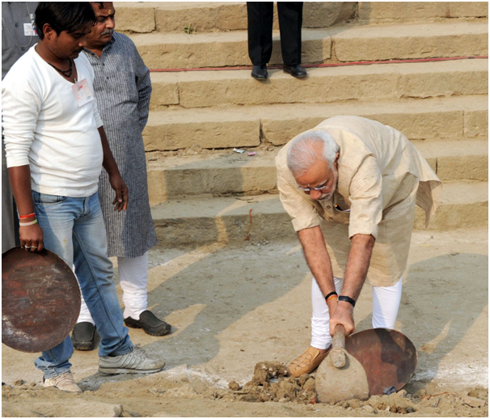

Swachh Bharat Campaign
Program
“A clean India would be the best tribute India could pay to Mahatma Gandhi on his 150 birth anniversary in 2019,” said Shri Narendra Modi as he launched the Swachh Bharat Mission at Rajpath in New Delhi. On 2nd October 2014, Swachh Bharat Mission was launched throughout length and breadth of the country as a national movement. The campaign aims to achieve the vision of a ‘Clean India’ by 2nd October 2019
Process
While leading the mass movement for cleanliness, the Prime Minister exhorted people to fulfil Mahatma Gandhi’s dream of a clean and hygienic India. Shri Narendra Modi himself initiated the cleanliness drive at Mandir Marg Police Station. Picking up the broom to clean the dirt, making Swachh Bharat Abhiyan a mass movement across the nation, the Prime Minister said people should neither litter, nor let others litter. He gave the mantra of ‘Na gandagi karenge, Na karne denge.’ Shri Narendra Modi also invited nine people to join the cleanliness drive and requested each of them to draw nine more into the initiative.
Plan
By inviting people to participate in the drive, the Swachhta Abhiyan has turned into a National Movement. A sense of responsibility has been evoked among the people through the Clean India Movement. With citizens now becoming active participants in cleanliness activities across the nation, the dream of a ‘Clean India’ once seen by Mahatma Gandhi has begun to get a shape

Partnerships
The Make in India initiative has been built on layers of collaborative effort. DIPP initiated this process by inviting participation from Union Ministers, Secretaries to the Government of India, state governments, industry leaders, and various knowledge partners. Next, a National Workshop on sector specific industries in December 2014 brought Secretaries to the Government of India and industry leaders together to debate and formulate an action plan for the next three years, aimed at raising the contribution of the manufacturing sector to 25% of the GDP by 2020.